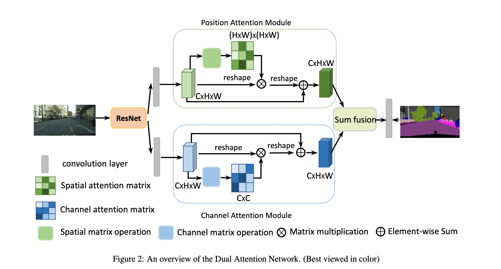
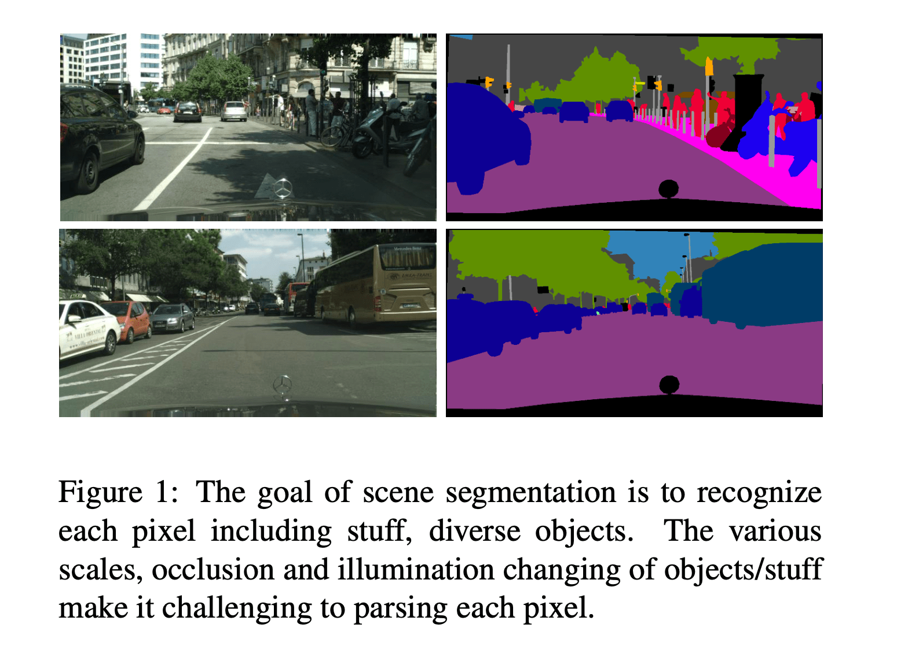
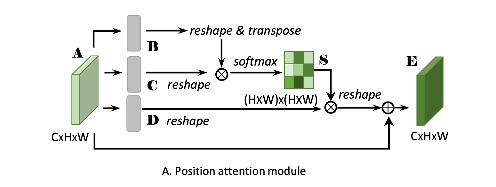
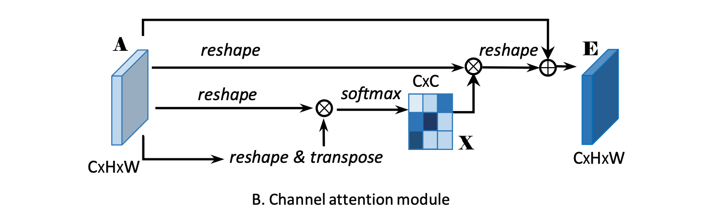
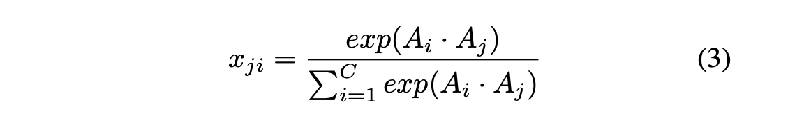
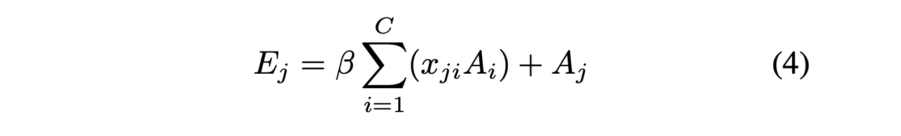
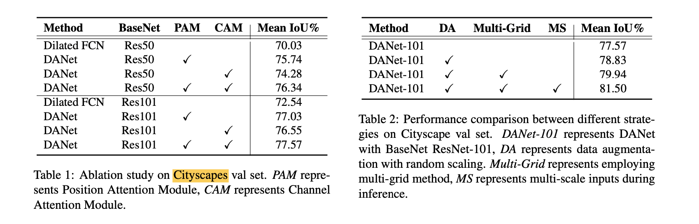
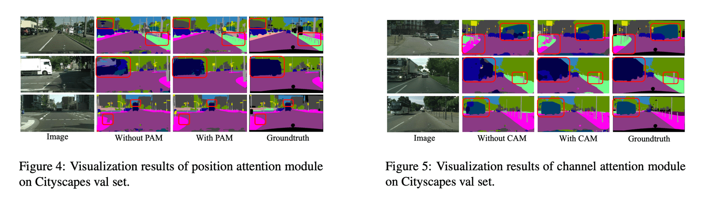
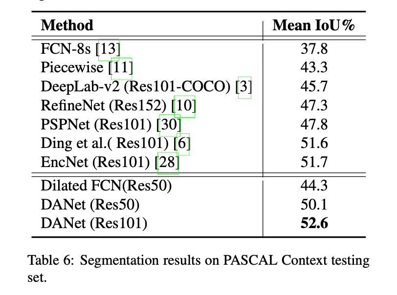
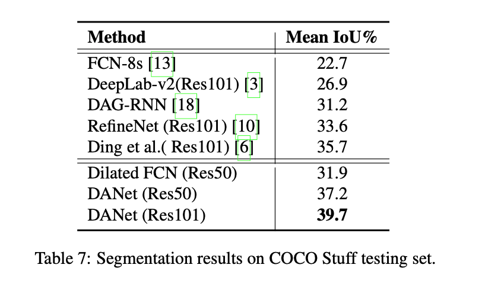

Dual Attention Network for Scene Segmentation
arXiv: 1809.02983
“用于场景分割的双注意力网络“
Abstract
针对场景分割任务，基于 self-Attention 机制捕捉丰富的上下文依赖关系。
与以往通过多尺度特征融合来捕捉上下文的工作不同，本篇论文提出了一种双注意力网络（Dual Attention Network, DANet）来自适应地整合局部特征与其全局依赖性。
two types of attention modules：分别在空间维度和通道维度上建立语义相互依赖的模型。
（1）position attention module
- 对所有位置的特征进行加权和，选择性地聚合每个位置的特征。
（2）channel attention module
- 通道关注模块有选择地强调相互依赖的通道图，通过整合所有通道图之间的相关特征。
将两个注意力模块的输出相加，以进一步实现改善特征表示，这有助于更精确的分割结果。
在 Cityscapes、PASCAL Context 和 COCO Stuff 数据集上取得了 SOTA。
1. Introduction
本篇论文提出了一种新颖的框架工作，称为作为双注意力网络（Dual Attention Network, DANet），用于自然场景图像分割，如 Figure 2。

它引入了一种自注意力机制，分别捕捉空间和通道维度的特征依赖性。具体来说，在扩张的 FCN 之上附加了两个平行的注意力模块。一个是位置注意力模块（position attention module），另一个是通道注意力模块（channel attention module）。
对于位置注意力模块，引入自关注机制来捕捉特征图中任意两个位置之间的空间依赖性。
对于通道注意力模块，使用类似的自注意力机制来捕捉任意两个通道图之间的通道依赖性。
最后，将这两个注意力模块的输出进行融合，以进一步增强特征表示。

图 1：场景分割的目标是识别每个像素，包括东西、不同的物体。物体/东西的各种尺度、遮挡和光照变化，使得解析每个像素具有挑战性。
2. Related Work
“Attention is all your need” 率先提出了绘制输入的全局依赖性的自注意机制，并将其应用于机器翻译中。
3. Dual Attention Network
在本节中，首先介绍网络的总体框架，然后介绍了两个注意力模块，它们分别在空间和通道维度上捕捉长程上下文信息。最后介绍如何将它们聚合在一起进行进一步的完善。
3.1. Overview
去掉了向下采样操作，并在最后两个 ResNet 块中采用了空洞卷积，从而将最后的特征图的大小放大到输入图像的 1/8。它保留了更多的细节，而没有增加额外的参数。然后，残差网络的特征将被输入到两个平行的注意力模块中。
Figure 2 在上部分是 spatial attention modules。首先应用卷积层来获得降维的特征。然后将这些特征反馈到位置注意力模块中，通过以下三个步骤生成新的空间长程上下文信息特征（spatial long-range contextual information）。
（1）第一步是生成一个空间注意力矩阵，该矩阵对特征的任意两个像素之间的空间关系进行建模。
（2）在注意力矩阵和原始特征之间进行矩阵乘法。
（3）对上述乘法结果矩阵和原始特征进行元素求和操作，以获得反映远距离上下文的最终表示。
同时，通道维度的远距离上下文信息由通道注意力模块捕获。捕捉通道关系的过程与位置关注模块类似，只是第一步，在通道维度上计算通道注意力矩阵。
最后，将两个注意力模块的输出汇总，以获得更好的特征表示，用于像素级预测。
3.2. Position Attention Module

给定一个局部特征图 $A \in \mathbb{R}^{C×H× W}$，首先将其送入卷积层，分别生成两个新的特征图 B 和 C，$(B, C) \in \mathbb{R}^{C \times H \times W}$。
然后将 B、C reshape 为 $(B, C) \in \mathbb{R}^{C \times N}$，其中 $N = H \times W$，表示一个通道的特征图的像素总数。
之后，矩阵乘法 $C^T \cdot B$，并应用 softmax 层计算空间注意力图 $S \in \mathbb{R}^{N×N}$。
- $s_{ji}$ 衡量的是衡量第 i 个位置对第 j 个位置的影响。两种位置的特征表征越相似，有助于提高它们之间的相关性。
同时，需要将 A 经过一个卷积层得到特征图 D，$D \in \mathbb{R}^{C \times H \times W}$，然后将 D reshape 成 $D \in \mathbb{R}^{C \times N}$。然后再 D 和 S 进行矩阵乘法后，将得到的结果 reshape 为 $\mathbb{R}^{C \times H \times W}$。乘以比例参数（scale parameter）$\alpha$ 后与特征图 A 进行 element-wise sum operation 得到最终的结果 $E \in \mathbb{R}^{C \times H \times W}$。
由公式 (2) 可以推断，每个位置的结果特征 E 是所有位置的特征和原始特征的加权和。因此，它具有全局的上下文视图，并根据空间注意力图有选择地聚合上下文。相似的语义特征实现了相互增益，从而导入了类内紧凑和语义一致性。
3.3. Channel Attention Module
通过利用通道图之间的相互依赖性，可以强调相互依赖的特征图，改善特定语义的特征表示。
因此，构建一个通道注意力模块来明确建模通道之间的相互依赖关系。

与位置注意力模块不同，这里直接通过原始特征图 $A \in \mathbb{R}^{C \times H \times W}$ 计算通道注意力图（channel attention map）$X \in \mathbb{R}^{C \times C}$。
细节上，先将 $A \in \mathbb{R}^{C \times H \times W}$ reshape 成 $A \in \mathbb{R}^{C \times N}$，然后 A 与 A 的转置进行矩阵乘法，$A \cdot A^T$。最后，应用 softmax 层得到通道注意力图 $X \in \mathbb{R}^{C \times C}$：

- 其中，其中 $x_{ji}$衡量第 i 个通道对第 j 个通道的影响。
$X^T \cdot A$ 并将结果 reshape 为 $\mathbb{R}^{C \times H \times W}$，最后的操作和 Position Attention Module 类似，scale parameter 为 $\beta$。

从公式 (4) 可以看出，每个通道的最终特征是所有通道的特征和原始特征的加权和，它模拟了特征图之间的长程语义依赖关系。它有助于提升特征的可分辨性。
利用所有相关位置的空间信息来模拟通道相关性。
we exploit spatial information at all corresponding positions to model channel correlations.
3.4. Attention Module Embedding with Networks
本篇论文提出的注意力模块很简单，可以直接插入到现有的 FCN pipeline 中。它们不会增加太多参数，却能有效地加强特征表示。
4. Experiments
4.2.1 Ablation Study for Attention Modules: Table 1, Figure 4, Figure 5.
4.2.2 Study for Improvement Strategies: Table 2.


4.2.3 Visualization of Attention Module: Figure 6.

4.2.4 Comparing with State-of-the-art: Table 3.

4.3. Results on PASCAL VOC 2012 Dataset: Table4, Table5.

4.4. Results on PASCAL Context Dataset: Table 6

4.5. Results on COCO Stuff Dataset: Table 7.

5. Conclusion
- presented a Dual Attention Network (DANet) for scene segmentation, which adaptively integrates local semantic features using the self-attention mechanism.
- position attention module and a channel attention module to capture global dependencies in the spatial and channel dimensions respectively.
- dual attention modules capture long-range contextual information effectively and give more precise segmentation results.
- Dual Attention Network (DANet) achieves outstanding performance consistently on four scene segmentation datasets, Cityscapes, Pascal VOC 2012, Pascal Context, and COCO Stuff.